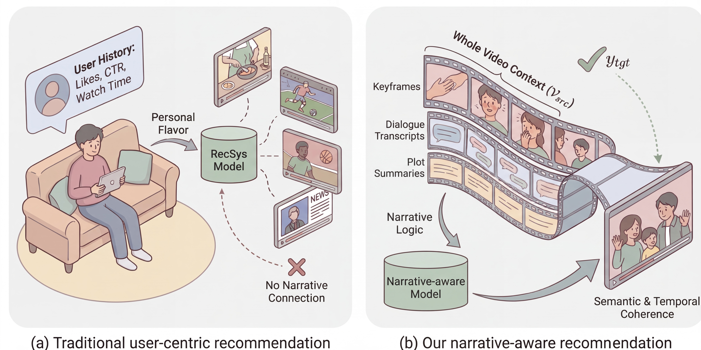
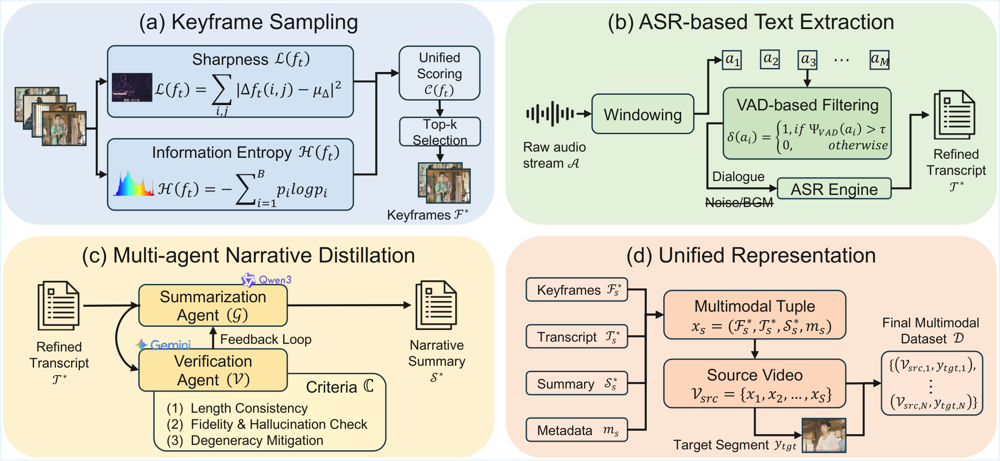
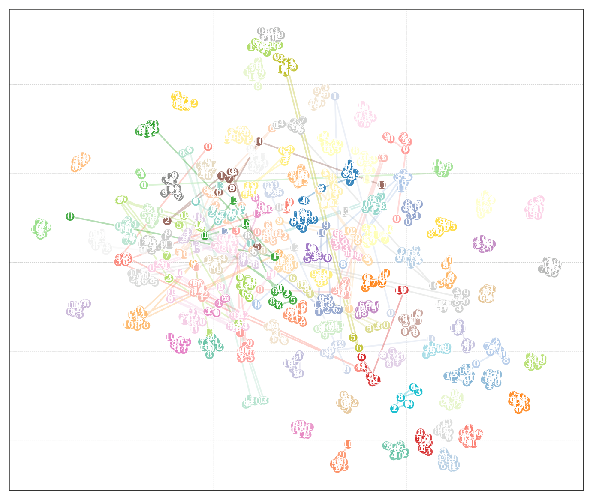
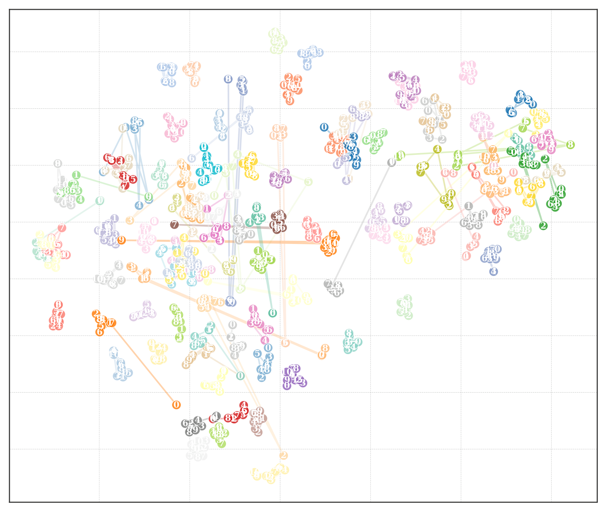

Recent recommender systems are largely built upon user interaction data, focusing on personalized preference modeling over independent items. However, such paradigms are not well-suited for short-form dramas, where the goal is to seamlessly continue narrative-driven content rather than optimize for user-specific choices. This calls for a shift from user-centric recommendation to narrative-aware content continuation, enabling users to be directly presented with the next coherent episode without manual search.
To this end, we introduce MM-SFD, a novel multimodal dataset for narrative-aware recommendation in short-form dramas. Unlike existing datasets, our dataset is user-agnostic and models intrinsic narrative coherence by capturing structured relationships between consecutive clips. It provides rich multimodal signals, including video, text, and metadata, along with ground-truth next-episode annotations derived from the original storyline. We further define a narrative continuation task and establish benchmark settings with representative baselines covering retrieval and generative paradigms. We believe this dataset opens a new direction for narrative-aware recommendation in emerging episodic content scenarios.
From user-centric matching to narrative-aware continuation

Left: Traditional recommendation relies on sparse user history for personalized matching, often producing disjointed results. Right: Our narrative-aware approach ingests the full video context and models intrinsic plot logic through multimodal signals, decoding a coherent successor segment.

The multi-stage pipeline: (a) Keyframe sampling using sharpness + entropy scoring, (b) VAD-filtered ASR for clean dialogue extraction, (c) Multi-agent narrative distillation (Qwen3-32B + Gemini 3.1) for verified summaries, (d) Unified multimodal representation for cross-video semantic reasoning.
Joint sharpness-entropy scoring to select top-k informative frames
Voice Activity Detection removes BGM noise before transcription
Iterative summarization + verification with quality criteria
Keyframes + transcripts + summaries + metadata per segment
| Split | Train | Eval | UGC | PGC | OOD |
|---|---|---|---|---|---|
| Pairs | 241,545 | 14,231 | 11,175 | 1,613 | 1,443 |
| Texts | 268 | 247 | 294 | 76 | 78 |
| Duration (s) | 474 | 431 | 533 | 58 | 60 |
| Segments | 8.7 | 8.1 | 9.6 | 2.6 | 2.7 |
| Continuations | 2.2 | 2.1 | 2.4 | 1 | 1 |
The dataset spans five splits: Train, Eval, and three test sets — UGC (user-generated, high narrative density with multi-path continuations), PGC (professional, concise linear progression), and OOD (out-of-distribution, concluding episodes testing narrative ending prediction).
An illustrative sample from MM-SFD: source video context (keyframes, transcripts, summaries) aligned with the ground-truth target segment for narrative continuation.
Performance comparison of retrieval and generative models across test splits
| Method | Eval | UGC | PGC | OOD | ||||||||||||
|---|---|---|---|---|---|---|---|---|---|---|---|---|---|---|---|---|
| H@1 | H@3 | H@5 | H@10 | H@1 | H@3 | H@5 | H@10 | H@1 | H@3 | H@5 | H@10 | H@1 | H@3 | H@5 | H@10 | |
| Retrieval Retrieval | ||||||||||||||||
| BM25 | 0.072 | 0.129 | 0.159 | 0.202 | 0.086 | 0.154 | 0.189 | 0.239 | 0.021 | 0.042 | 0.050 | 0.074 | 0.015 | 0.031 | 0.042 | 0.058 |
| Visual DR | - | - | - | - | - | - | - | - | - | - | - | - | - | - | - | - |
| Textual DR | - | - | - | - | - | - | - | - | - | - | - | - | - | - | - | - |
| Multimodal DR | - | - | - | - | - | - | - | - | - | - | - | - | - | - | - | - |
| Generative Generative | ||||||||||||||||
| Visual GR | - | - | - | - | - | - | - | - | - | - | - | - | - | - | - | - |
| Textual GR | 0.233 | 0.341 | 0.384 | 0.437 | 0.249 | 0.376 | 0.428 | 0.490 | 0.206 | 0.249 | 0.265 | 0.293 | 0.140 | 0.171 | 0.177 | 0.191 |
| Multimodal GR | - | - | - | - | - | - | - | - | - | - | - | - | - | - | - | - |

UGC Segments: Entangled distribution reflecting weak narrative structure and multi-path continuations

PGC Segments: Well-separated clusters with clear narrative progression trajectories
The t-SNE visualization reveals a fundamental structural contrast: UGC segments collapse into a homogeneous cloud, while PGC segments form fine-grained clusters with distinct semantic "leaps" between narrative phases. This highlights that accurate continuation in PGC requires capturing logical plot shifts beyond visual similarity.
To examine whether models rely on "visual shortcuts" or genuine narrative understanding, we partition test samples into bins by Overlap Ratio:
@inproceedings{mmsfd2026,
title={Towards Narrative-Aware Recommendation: A Multimodal Dataset for Short-Form Dramas},
author={...},
booktitle={ACM International Conference on Multimedia (MM '26)},
year={2026}
}